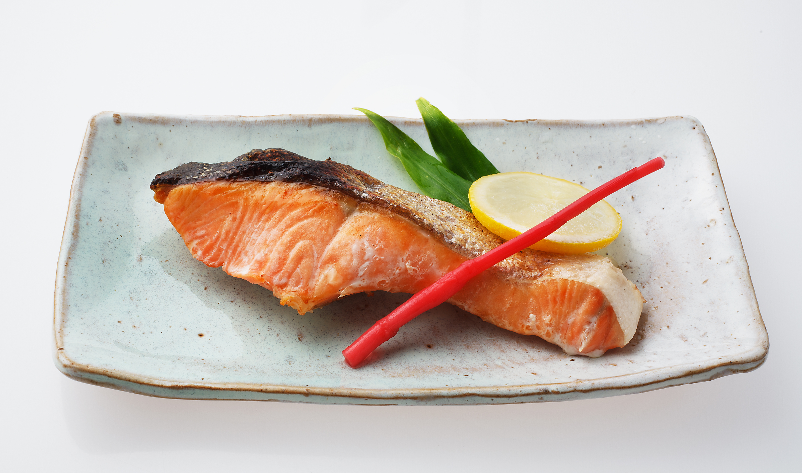

Recipe
レシピ一覧
減塩食鮭の塩焼き
＞材料
さけ 1切
塩 0.5g
酒 1.0g
サラダ油 0.1g
大根おろし 20g
大葉バラン 1枚
＞栄養量
カロリー 200kcal
たんぱく質 20g
脂質 10g
塩分 1.0g
作り方
- 1. 鮭に塩と酒をふる
- 2. サラダ油をひき、鮭を焼く
- 3. レモンとバランを引いて、鮭をおき完成
point
鮭は料理酒にしっかりと浸して臭みを抜いた後、少量の塩で味を整えましょう！
減塩食ドライカレー

＞材料
米飯 150g
豚ひき肉 100g
玉ねぎ 50g
人参 30g
ピーマン 1/2個
カレールー 1片
にんにく 2.5g
サラダ油 1.0g
＞栄養量
カロリー 555kcal
たんぱく質 11g
脂質 15g
塩分 2.5g
作り方
- 1. 玉ねぎ、人参、ピーマンはみじん切りにする
- 2. フライパンでサラダ油を熱し、1を入れて中火で炒めます。
- 3. 全体がしんなりしたら、豚ひき肉を加えてさらに炒めます。
- 4. 豚ひき肉に火が通ったら、水、カレールー、にんにくを加えて弱火で煮込む
- 5. 汁気がなくなったら、盛り付けて完成
point
カレールーは一人前一欠片で十分味がつきます！水量はできるだけ抑えましょう
減塩食肉じゃが

＞材料
牛肉 20g
じゃがいも 50g
玉ねぎ 30g
人参 20g
三度豆 10g
酒 1.0g
濃口しょうゆ 7.5g
砂糖 3.0g
サラダ油 0.1g
＞栄養量
カロリー 151kcal
たんぱく質 5.5g
脂質 7.3g
塩分 1.5g
作り方
- 1. サラダ油を熱し、牛肉と玉ねぎを炒める
- 2. 具材を入れ、水を具が浸る程度に入れる
- 3. 調味料を全て入れ、煮汁が少なくなるまで弱火で煮る
point
濃口しょうゆは7.5gで十分！しっかり味を染み込ませましょう！
減塩食タコ酢

＞材料
きゅうり 50g
塩 0.1
たこ 70
酢 20g
砂糖 10g
薄口しょうゆ 2.5
＞栄養量
カロリー 43kcal
たんぱく質 3.3g
脂質 0.2g
塩分 0.6g
作り方
- 1. 薄切りにした胡瓜に塩を入れてよく揉む
- 2. タコは5mm幅のそぎ切りにする
- 3. 調味料を合わせ三杯酢を作る
- 4. 1-3全てを混ぜ合わせて完成
point
塩はきゅうりの水分を抜く程度にかけ、あとはお酢の酸味で減塩！
ダイエットコーヒーゼリー

＞材料
インスタントコーヒー 10g
水 200ml
ゼラチン 1.0g
パルスイート 6g
＞栄養量
カロリー 36kcal
たんぱく質 1.25g
脂質 0g
塩分 0g
作り方
- 1. 鍋にインスタントコーヒー、水、パルスイートを入れ弱火にかける
- 2. 全体がなじんだらゼラチンを加え、耐熱性のゴムベラで混ぜ合わせる
- 3. バットや容器に流し入れ、冷蔵庫で冷やしたら完成
point
砂糖の代わりに人工甘味料パルスイートを使うと糖分がさらに抑えられます！